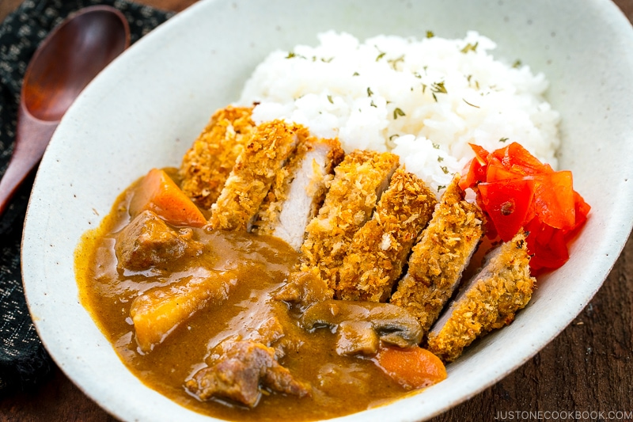

Pork Katsu With Curry

Japanese katsu uses fried breaded chicken, giving it a satisfyingly
crunchy texture combined with a sweet punchy sauce. This Japanese
recipe is easy to master and uses curry powder packed with turmeric,
cardamom, cumin seeds, and much more, to give delicious spice.
This Japanese Chicken Katsu Curry Rice recipe is a symphony of texture—crispy
panko chicken cutlet, creamy curry sauce, and of course, rice!
Ingredients
- Japanese Curry
- Pork Katsu Cutlet
- Cooked Japanese Short-Grain Rice
- Japanese Red Pickled Vegetables
Steps
- Make your choice of Japanese curry: Beef Curry, Chicken Curry,
Instant Pot Curry, Pork Curry, Instant Pot Seafood Curry, Vegetarian Curry,
and more on the blog post. If you have time, I recommend making the curry one
day before you serve the Katsu Curry. The flavor is better the next day, and
it's easier to reheat the curry rather than making it from scratch while you
prepare the Katsu.
- Make your choice of katsu (cutlet): Tonkatsu, Baked Tonkatsu, Chicken Katsu,
Baked Chicken Katsu, Gluten-Free Baked Katsu, Fried Shrimp, Baked Ebi Katsu,
Baked Fish Katsu, Menchi Katsu, and more on the blog post.
-
Make the cooked Japanese short-grain rice (I recommend serving Japanese
short-grain rice with Japanese curry) using a rice cooker, a pot over the
stovetop, a pressure cooker (Instant Pot), or a donabe.
-
Serve an individual portion of steamed rice on a plate or bowl and ladle some
Japanese curry alongside the rice. Place the Katsu on the top. Garnish it with
fukujinzuke (Japanese red pickled vegetables) on the side.